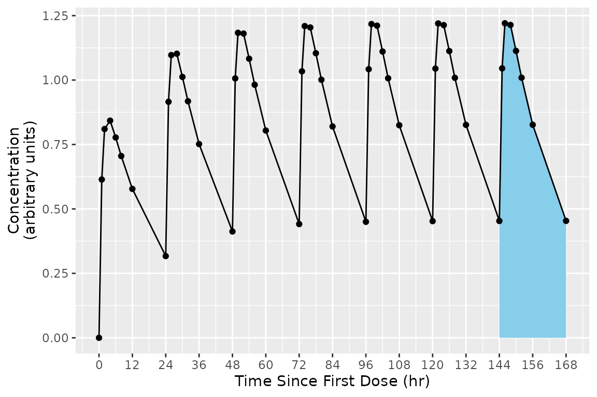
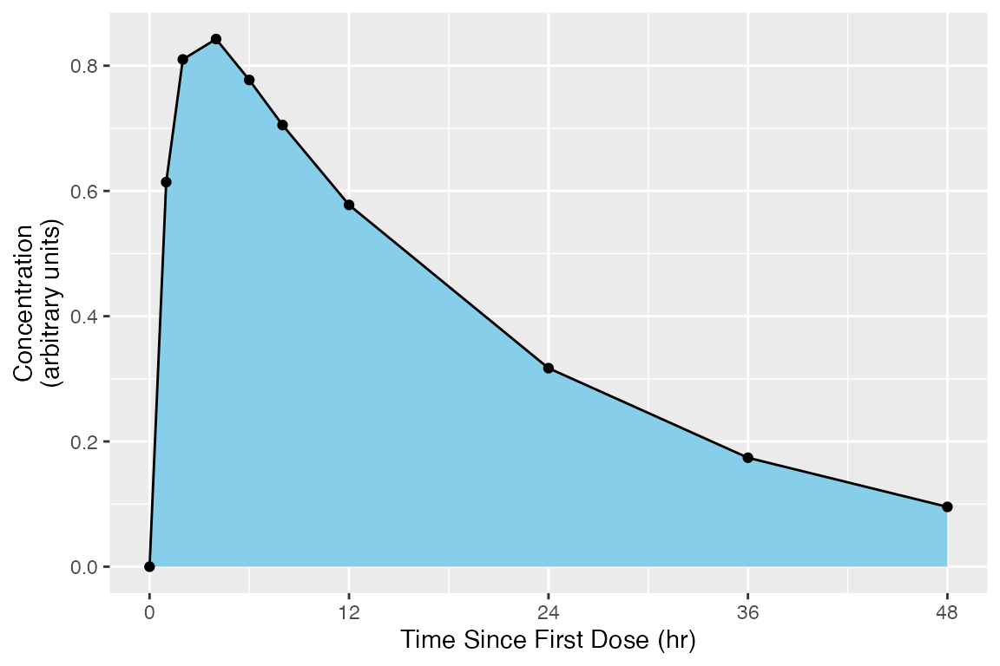
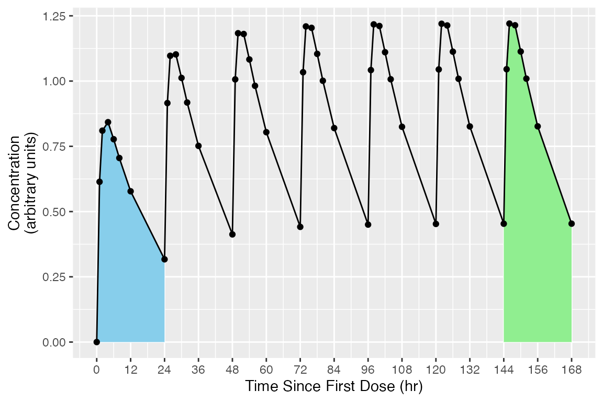
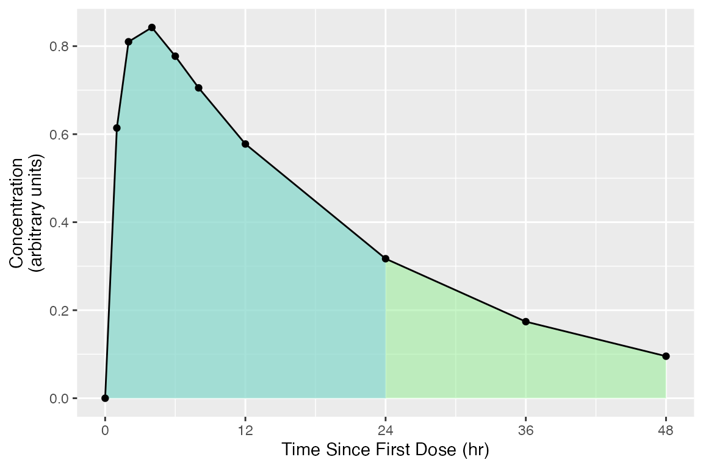
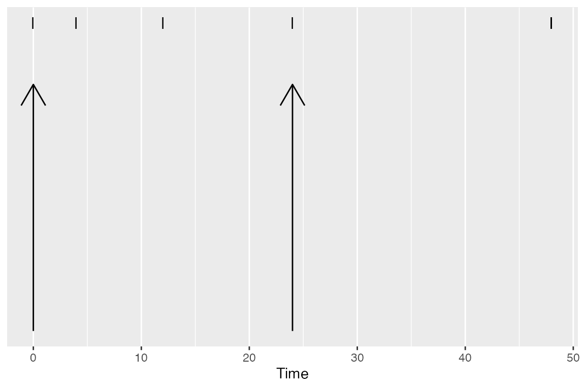
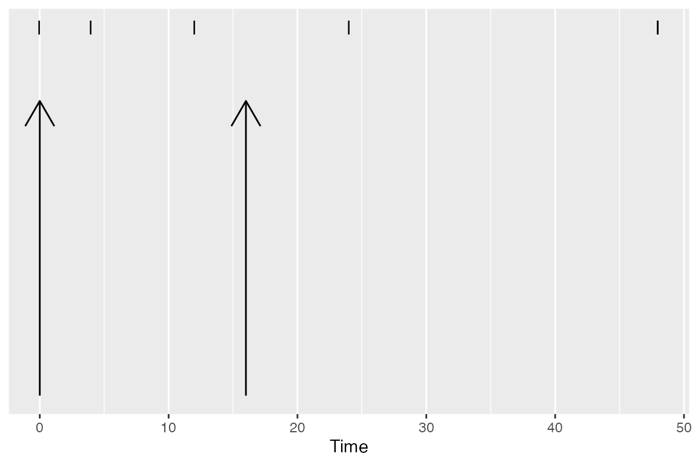

vignettes/Selection-of-Calculation-Intervals.Rmd
Selection-of-Calculation-Intervals.RmdPKNCA considers two types of data grouping within data sets: the group and the interval. A group typically identifies a single subject given a single intervention type (a “treatment”) with a single analyte. An interval subsets a group by times within the group, and primary noncompartmental analysis (NCA) calculations are performed within an interval.
As a concrete example, consider the figure below shows the concentration-time profile of a study subject in a multiple-dose study. The group is all points in the figure, and the interval for the last day (144 to 168 hr) is the area with blue shading.
## Formula for concentration:
## conc ~ time | treatment + ID
## With 1 subjects defined in the 'ID' column.
## Nominal time column is not specified.
##
## First 6 rows of concentration data:
## study treatment ID time conc analyte exclude volume duration
## Study 1 Trt 1 1 0 0.0000000 Analyte 1 <NA> NA 0
## Study 1 Trt 1 1 1 0.6140526 Analyte 1 <NA> NA 0
## Study 1 Trt 1 1 2 0.8100022 Analyte 1 <NA> NA 0
## Study 1 Trt 1 1 4 0.8425422 Analyte 1 <NA> NA 0
## Study 1 Trt 1 1 6 0.7771994 Analyte 1 <NA> NA 0
## Study 1 Trt 1 1 8 0.7052469 Analyte 1 <NA> NA 0
# Plot the concentration-time data and the interval
ggplot(d_conc_multi, aes(x=time, y=conc)) +
geom_ribbon(data=d_conc_multi[d_conc_multi$time >= 144,],
aes(ymax=conc, ymin=0),
fill="skyblue") +
geom_point() + geom_line() +
scale_x_continuous(breaks=seq(0, 168, by=12)) +
scale_y_continuous(limits=c(0, NA)) +
labs(x="Time Since First Dose (hr)",
y="Concentration\n(arbitrary units)")
intervals_manual <- data.frame(start=144, end=168, auclast=TRUE)
knitr::kable(intervals_manual)| start | end | auclast |
|---|---|---|
| 144 | 168 | TRUE |
PKNCAdata(d_conc, intervals=intervals_manual)## Formula for concentration:
## conc ~ time | treatment + ID
## With 1 subjects defined in the 'ID' column.
## Nominal time column is not specified.
##
## First 6 rows of concentration data:
## study treatment ID time conc analyte exclude volume duration
## Study 1 Trt 1 1 0 0.0000000 Analyte 1 <NA> NA 0
## Study 1 Trt 1 1 1 0.6140526 Analyte 1 <NA> NA 0
## Study 1 Trt 1 1 2 0.8100022 Analyte 1 <NA> NA 0
## Study 1 Trt 1 1 4 0.8425422 Analyte 1 <NA> NA 0
## Study 1 Trt 1 1 6 0.7771994 Analyte 1 <NA> NA 0
## Study 1 Trt 1 1 8 0.7052469 Analyte 1 <NA> NA 0
## No dosing information.
##
## With 1 rows of AUC specifications.
## No options are set differently than default.Group matching occurs by matching all overlapping column names between the groups and the interval data.frame. (Note that grouping columns cannot be the word start, end, or share a name with an NCA parameter.)
The groups for an interval prepare for summarization. Typically the groups will take a structure similar to the preferred summarization structure with groups nested in the logical method for summary. As an example, the group structure may be: study, treatment, day, analyte, and subject. The grouping names for an interval must be the same as or a subset of the grouping names used for the concentration data.
As the matching occurs with all available columns, the grouping columns names are only required to the level of specificity for the calculations desired. As an example, if you want AUCinf,obs in subjects who received single doses and AUClast on days 1 (0 to 24 hours) and 10 (216 to 240 hours) in subjects who received multiple doses, with treatment defined as “Drug 1 Single” or “Drug 1 Multiple”, the intervals could be defined as below.
intervals_manual <-
data.frame(
treatment=c("Drug 1 Single", "Drug 1 Multiple", "Drug 1 Multiple"),
start=c(0, 0, 216),
end=c(Inf, 24, 240),
aucinf.obs=c(TRUE, FALSE, FALSE),
auclast=c(FALSE, TRUE, TRUE)
)
knitr::kable(intervals_manual)| treatment | start | end | aucinf.obs | auclast |
|---|---|---|---|---|
| Drug 1 Single | 0 | Inf | TRUE | FALSE |
| Drug 1 Multiple | 0 | 24 | FALSE | TRUE |
| Drug 1 Multiple | 216 | 240 | FALSE | TRUE |
Intervals are defined by data.frames with one row per interval, zero or more columns to match the groups from the PKNCAdata object, and one or more NCA parameters to calculate.
Selection of points within an interval occurs by choosing any point at or after the start and at or before the end.
The end of an interval may be infinity. An interval to infinity works the same as any other interval in that points are selected by being at or after the start and at or before the end of the interval. Selecting Inf or any value at or after the maximum time yields no difference in effect, but Inf is simpler when scripting to ensure that all points are selected.
## Formula for concentration:
## conc ~ time | treatment + ID
## With 1 subjects defined in the 'ID' column.
## Nominal time column is not specified.
##
## First 6 rows of concentration data:
## study treatment ID time conc analyte exclude volume duration
## Study 1 Trt 1 1 0 0.0000000 Analyte 1 <NA> NA 0
## Study 1 Trt 1 1 1 0.6140526 Analyte 1 <NA> NA 0
## Study 1 Trt 1 1 2 0.8100022 Analyte 1 <NA> NA 0
## Study 1 Trt 1 1 4 0.8425422 Analyte 1 <NA> NA 0
## Study 1 Trt 1 1 6 0.7771994 Analyte 1 <NA> NA 0
## Study 1 Trt 1 1 8 0.7052469 Analyte 1 <NA> NA 0
# Use superposition to simulate multiple doses
ggplot(d_conc$data[d_conc$data$time <= 48,], aes(x=time, y=conc)) +
geom_ribbon(data=d_conc$data,
aes(ymax=conc, ymin=0),
fill="skyblue") +
geom_point() + geom_line() +
scale_x_continuous(breaks=seq(0, 72, by=12)) +
scale_y_continuous(limits=c(0, NA)) +
labs(x="Time Since First Dose (hr)",
y="Concentration\n(arbitrary units)")
intervals_manual <-
data.frame(
start=0,
end=Inf,
auclast=TRUE,
aucinf.obs=TRUE
)
print(intervals_manual)## start end auclast aucinf.obs
## 1 0 Inf TRUE TRUE
my.data <- PKNCAdata(d_conc, intervals=intervals_manual)More than one interval may be specified for the same subject or group of subjects by providing more than one row of interval specifications. In the figure below, the blue and green shaded regions indicate the first and second rows of the intervals, respectively.
## Formula for concentration:
## conc ~ time | treatment + ID
## With 1 subjects defined in the 'ID' column.
## Nominal time column is not specified.
##
## First 6 rows of concentration data:
## study treatment ID time conc analyte exclude volume duration
## Study 1 Trt 1 1 0 0.0000000 Analyte 1 <NA> NA 0
## Study 1 Trt 1 1 1 0.6140526 Analyte 1 <NA> NA 0
## Study 1 Trt 1 1 2 0.8100022 Analyte 1 <NA> NA 0
## Study 1 Trt 1 1 4 0.8425422 Analyte 1 <NA> NA 0
## Study 1 Trt 1 1 6 0.7771994 Analyte 1 <NA> NA 0
## Study 1 Trt 1 1 8 0.7052469 Analyte 1 <NA> NA 0
# Plot the concentration-time data and the interval
ggplot(d_conc_multi, aes(x=time, y=conc)) +
geom_ribbon(data=d_conc_multi[d_conc_multi$time <= 24,],
aes(ymax=conc, ymin=0),
fill="skyblue") +
geom_ribbon(data=d_conc_multi[d_conc_multi$time >= 144,],
aes(ymax=conc, ymin=0),
fill="lightgreen") +
geom_point() + geom_line() +
scale_x_continuous(breaks=seq(0, 168, by=12)) +
scale_y_continuous(limits=c(0, NA)) +
labs(x="Time Since First Dose (hr)",
y="Concentration\n(arbitrary units)")
intervals_manual <-
data.frame(
start=c(0, 144),
end=c(24, 168),
auclast=TRUE
)
knitr::kable(intervals_manual)| start | end | auclast |
|---|---|---|
| 0 | 24 | TRUE |
| 144 | 168 | TRUE |
my.data <- PKNCAdata(d_conc, intervals=intervals_manual)In some scenarios, multiple intervals may be needed where some intervals overlap. There is no issue with an interval specification that has two rows with overlapping times; the rows are considered separately. In the example below, the 0-24 interval is shared between both the first and second (shaded blue-green).
The example of overlapping intervals also illustrates that different calculations can be performed in different intervals. In this case, auclast is calculated in both intervals while aucinf.obs is only calculated in the 0-Inf interval.
## Formula for concentration:
## conc ~ time | treatment + ID
## With 1 subjects defined in the 'ID' column.
## Nominal time column is not specified.
##
## First 6 rows of concentration data:
## study treatment ID time conc analyte exclude volume duration
## Study 1 Trt 1 1 0 0.0000000 Analyte 1 <NA> NA 0
## Study 1 Trt 1 1 1 0.6140526 Analyte 1 <NA> NA 0
## Study 1 Trt 1 1 2 0.8100022 Analyte 1 <NA> NA 0
## Study 1 Trt 1 1 4 0.8425422 Analyte 1 <NA> NA 0
## Study 1 Trt 1 1 6 0.7771994 Analyte 1 <NA> NA 0
## Study 1 Trt 1 1 8 0.7052469 Analyte 1 <NA> NA 0
# Use superposition to simulate multiple doses
ggplot(d_conc$data, aes(x=time, y=conc)) +
geom_ribbon(data=d_conc$data,
aes(ymax=conc, ymin=0),
fill="lightgreen",
alpha=0.5) +
geom_ribbon(data=d_conc$data[d_conc$data$time <= 24,],
aes(ymax=conc, ymin=0),
fill="skyblue",
alpha=0.5) +
geom_point() + geom_line() +
scale_x_continuous(breaks=seq(0, 168, by=12)) +
scale_y_continuous(limits=c(0, NA)) +
labs(x="Time Since First Dose (hr)",
y="Concentration\n(arbitrary units)")
intervals_manual <-
data.frame(
start=0,
end=c(24, Inf),
auclast=TRUE,
aucinf.obs=c(FALSE, TRUE)
)
knitr::kable(intervals_manual)| start | end | auclast | aucinf.obs |
|---|---|---|---|
| 0 | 24 | TRUE | FALSE |
| 0 | Inf | TRUE | TRUE |
my.data <- PKNCAdata(d_conc, intervals=intervals_manual)Some events have durations of times rather than instants in time associated with them. Two typical examples of duration data in NCA are intravenous infusions and urine or fecal sample collections. Inform PKNCA of durations with the duration argument to the PKNCAdose and PKNCAconc functions.
Durations data are selected based on both the beginning and ending of the duration existing within the interval.

The following parameters are available in an interval. For more information about the parameter, see the documentation for the function.
| Parameter Name | Parameter Description | Function for Calculation |
|---|---|---|
| adj.r.squared | The adjusted r^2 value of the half-life calculation | See the parameter name half.life |
| ae | The amount excreted (typically into urine or feces) | pk.calc.ae |
| aucall | The area under the concentration time curve from the beginning of the interval to the last concentration above the limit of quantification plus the triangle from that last concentration to 0 at the first concentration below the limit of quantification | pk.calc.auc.all |
| aucall.dn | Dose normalized aucall | pk.calc.dn |
| aucinf.obs | The area under the concentration time curve from the beginning of the interval to infinity with extrapolation to infinity from the observed Clast | pk.calc.auc.inf.obs |
| aucinf.obs.dn | Dose normalized aucinf.obs | pk.calc.dn |
| aucinf.pred | The area under the concentration time curve from the beginning of the interval to infinity with extrapolation to infinity from the predicted Clast | pk.calc.auc.inf.pred |
| aucinf.pred.dn | Dose normalized aucinf.pred | pk.calc.dn |
| aucint.all | The area under the concentration time curve in the interval extrapolating from Tlast to infinity with the triangle from Tlast to the next point and zero thereafter (matching AUCall) | pk.calc.aucint.all |
| aucint.all.dose | The area under the concentration time curve in the interval extrapolating from Tlast to infinity with the triangle from Tlast to the next point and zero thereafter (matching AUCall) | pk.calc.aucint.all |
| aucint.inf.obs | The area under the concentration time curve in the interval extrapolating from Tlast to infinity with zeros (matching AUClast) | pk.calc.aucint.inf.obs |
| aucint.inf.obs.dose | The area under the concentration time curve in the interval extrapolating from Tlast to infinity with zeros (matching AUClast) | pk.calc.aucint.inf.obs |
| aucint.inf.pred | The area under the concentration time curve in the interval extrapolating from Tlast to infinity with the triangle from Tlast to the next point and zero thereafter (matching AUCall) | pk.calc.aucint.inf.pred |
| aucint.inf.pred.dose | The area under the concentration time curve in the interval extrapolating from Tlast to infinity with the triangle from Tlast to the next point and zero thereafter (matching AUCall) | pk.calc.aucint.inf.pred |
| aucint.last | The area under the concentration time curve in the interval extrapolating from Tlast to infinity with zeros (matching AUClast) | pk.calc.aucint.last |
| aucint.last.dose | The area under the concentration time curve in the interval extrapolating from Tlast to infinity with zeros (matching AUClast) | pk.calc.aucint.last |
| auclast | The area under the concentration time curve from the beginning of the interval to the last concentration above the limit of quantification | pk.calc.auc.last |
| auclast.dn | Dose normalized auclast | pk.calc.dn |
| aucpext.obs | Percent of the AUCinf that is extrapolated after Tlast calculated from the observed Clast | pk.calc.aucpext |
| aucpext.pred | Percent of the AUCinf that is extrapolated after Tlast calculated from the predicted Clast | pk.calc.aucpext |
| aumcall | The area under the concentration time moment curve from the beginning of the interval to the last concentration above the limit of quantification plus the moment of the triangle from that last concentration to 0 at the first concentration below the limit of quantification | pk.calc.aumc.all |
| aumcall.dn | Dose normalized aumcall | pk.calc.dn |
| aumcinf.obs | The area under the concentration time moment curve from the beginning of the interval to infinity with extrapolation to infinity from the observed Clast | pk.calc.aumc.inf.obs |
| aumcinf.obs.dn | Dose normalized aumcinf.obs | pk.calc.dn |
| aumcinf.pred | The area under the concentration time moment curve from the beginning of the interval to infinity with extrapolation to infinity from the predicted Clast | pk.calc.aumc.inf.pred |
| aumcinf.pred.dn | Dose normalized aumcinf.pred | pk.calc.dn |
| aumclast | The area under the concentration time moment curve from the beginning of the interval to the last concentration above the limit of quantification | pk.calc.aumc.last |
| aumclast.dn | Dose normalized aumclast | pk.calc.dn |
| cav | The average concentration during an interval | pk.calc.cav |
| cav.dn | Dose normalized cav | pk.calc.dn |
| ceoi | Concentration at the end of infusion | pk.calc.ceoi |
| cl.all | Clearance or observed oral clearance calculated with AUCall | pk.calc.cl |
| cl.last | Clearance or observed oral clearance calculated to Clast | pk.calc.cl |
| cl.obs | Clearance or observed oral clearance calculated with observed Clast | pk.calc.cl |
| cl.pred | Clearance or observed oral clearance calculated with predicted Clast | pk.calc.cl |
| clast.obs | The last concentration observed above the limit of quantification | pk.calc.clast.obs |
| clast.obs.dn | Dose normalized clast.obs | pk.calc.dn |
| clast.pred | The concentration at Tlast as predicted by the half-life | See the parameter name half.life |
| clast.pred.dn | Dose normalized clast.pred | pk.calc.dn |
| clr.last | The renal clearance calculated using AUClast | pk.calc.clr |
| clr.obs | The renal clearance calculated using AUCinf,obs | pk.calc.clr |
| clr.pred | The renal clearance calculated using AUCinf,pred | pk.calc.clr |
| cmax | Maximum observed concentration | pk.calc.cmax |
| cmax.dn | Dose normalized cmax | pk.calc.dn |
| cmin | Minimum observed concentration | pk.calc.cmin |
| cmin.dn | Dose normalized cmin | pk.calc.dn |
| ctrough | The trough (predose) concentration | pk.calc.ctrough |
| ctrough.dn | Dose normalized ctrough | pk.calc.dn |
| deg.fluc | Degree of fluctuation | pk.calc.deg.fluc |
| end | Ending time of the interval (potentially infinity) | (none) |
| f | Bioavailability or relative bioavailability | pk.calc.f |
| fe | The fraction of the dose excreted | pk.calc.fe |
| half.life | The (terminal) half-life | pk.calc.half.life |
| kel.iv.last | Elimination rate (as calculated from the intravenous MRTlast) | pk.calc.kel |
| kel.iv.obs | Elimination rate (as calculated from the intravenous MRTobs) | pk.calc.kel |
| kel.iv.pred | Elimination rate (as calculated from the intravenous MRTpred) | pk.calc.kel |
| kel.last | Elimination rate (as calculated from the MRT using AUClast) | pk.calc.kel |
| kel.obs | Elimination rate (as calculated from the MRT with observed Clast) | pk.calc.kel |
| kel.pred | Elimination rate (as calculated from the MRT with predicted Clast) | pk.calc.kel |
| lambda.z | The elimination rate of the terminal half-life | See the parameter name half.life |
| lambda.z.n.points | The number of points used for the calculation of half-life | See the parameter name half.life |
| lambda.z.time.first | The first time point used for the calculation of half-life | See the parameter name half.life |
| mrt.iv.last | The mean residence time to the last observed concentration above the LOQ correcting for dosing duration | pk.calc.mrt.iv |
| mrt.iv.obs | The mean residence time to infinity using observed Clast correcting for dosing duration | pk.calc.mrt.iv |
| mrt.iv.pred | The mean residence time to infinity using predicted Clast correcting for dosing duration | pk.calc.mrt.iv |
| mrt.last | The mean residence time to the last observed concentration above the LOQ | pk.calc.mrt |
| mrt.md.obs | The mean residence time with multiple dosing and nonlinear kinetics using observed Clast | pk.calc.mrt.md |
| mrt.md.pred | The mean residence time with multiple dosing and nonlinear kinetics using predicted Clast | pk.calc.mrt.md |
| mrt.obs | The mean residence time to infinity using observed Clast | pk.calc.mrt |
| mrt.pred | The mean residence time to infinity using predicted Clast | pk.calc.mrt |
| ptr | Peak-to-Trough ratio (fraction) | pk.calc.ptr |
| r.squared | The r^2 value of the half-life calculation | See the parameter name half.life |
| span.ratio | The ratio of the half-life to the duration used for half-life calculation | See the parameter name half.life |
| start | Starting time of the interval | (none) |
| swing | Swing relative to Cmin | pk.calc.swing |
| tfirst | Time of the first concentration above the limit of quantification | pk.calc.tfirst |
| thalf.eff.iv.last | The effective half-life (as determined from the intravenous MRTlast) | pk.calc.thalf.eff |
| thalf.eff.iv.obs | The effective half-life (as determined from the intravenous MRTobs) | pk.calc.thalf.eff |
| thalf.eff.iv.pred | The effective half-life (as determined from the intravenous MRTpred) | pk.calc.thalf.eff |
| thalf.eff.last | The effective half-life (as determined from the MRTlast) | pk.calc.thalf.eff |
| thalf.eff.obs | The effective half-life (as determined from the MRTobs) | pk.calc.thalf.eff |
| thalf.eff.pred | The effective half-life (as determined from the MRTpred) | pk.calc.thalf.eff |
| time_above | Time above a given concentration | pk.calc.time_above |
| tlag | Lag time | pk.calc.tlag |
| tlast | Time of the last concentration observed above the limit of quantification | pk.calc.tlast |
| tmax | Time of the maximum observed concentration | pk.calc.tmax |
| vd.obs | Apparent observed volume of distribution calculated with observed Clast | pk.calc.vd |
| vd.pred | Apparent observed volume of distribution calculated with predicted Clast | pk.calc.vd |
| vss.iv.last | The steady-state volume of distribution with intravenous infusion calculating through Tlast | pk.calc.vss |
| vss.iv.obs | The steady-state volume of distribution with intravenous infusion using observed Clast | pk.calc.vss |
| vss.iv.pred | The steady-state volume of distribution with intravenous infusion using predicted Clast | pk.calc.vss |
| vss.last | The steady-state volume of distribution calculating through Tlast | pk.calc.vss |
| vss.md.obs | The steady-state volume of distribution for nonlinear multiple-dose data using observed Clast | pk.calc.vss |
| vss.md.pred | The steady-state volume of distribution for nonlinear multiple-dose data using predicted Clast | pk.calc.vss |
| vss.obs | The steady-state volume of distribution using observed Clast | pk.calc.vss |
| vss.pred | The steady-state volume of distribution using predicted Clast | pk.calc.vss |
| vz.obs | The terminal volume of distribution using observed Clast | pk.calc.vz |
| vz.pred | The terminal volume of distribution using predicted Clast | pk.calc.vz |